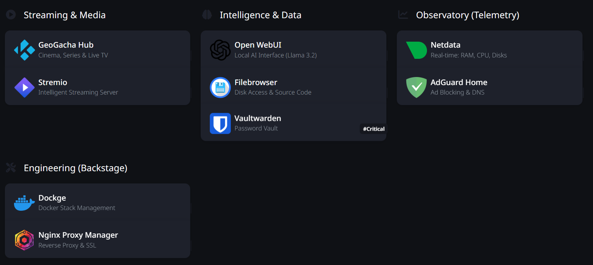
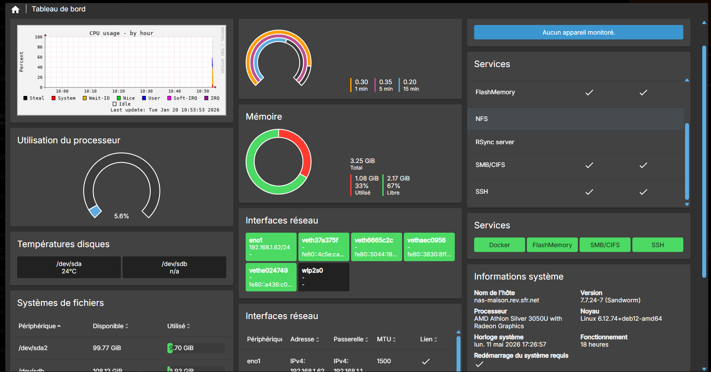
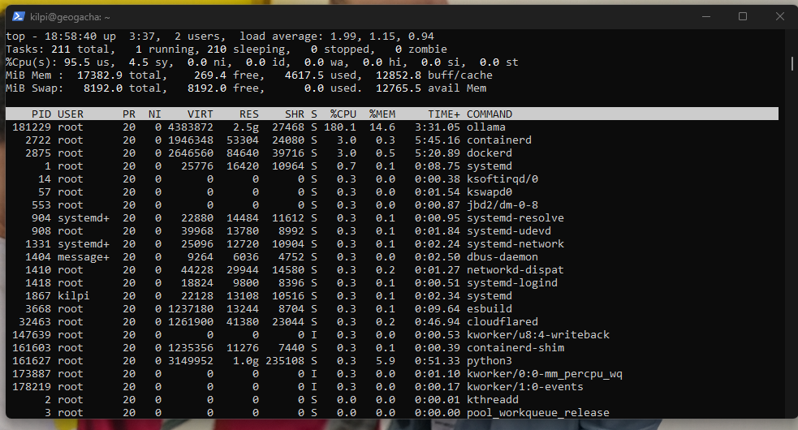
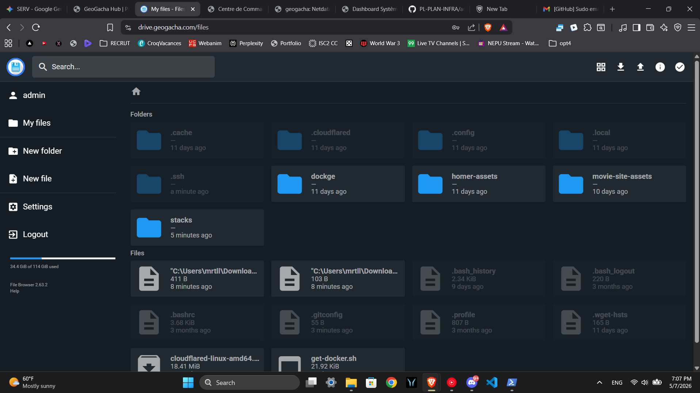
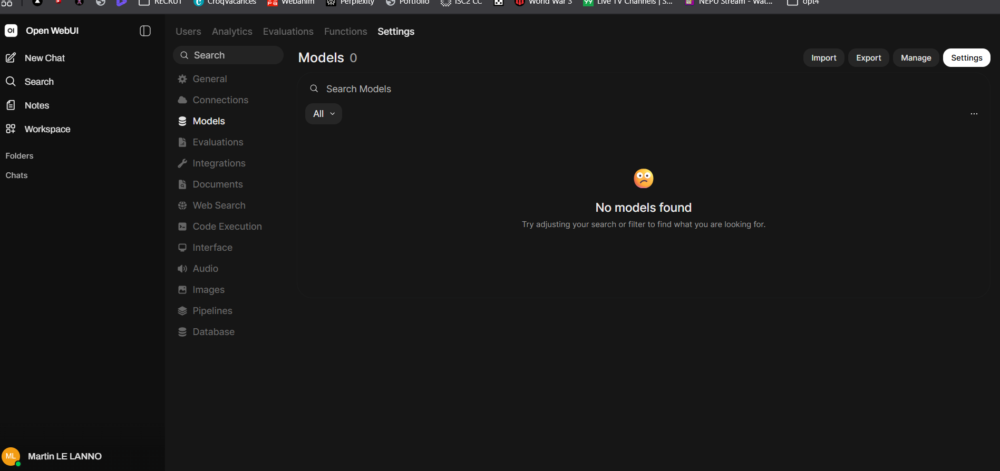
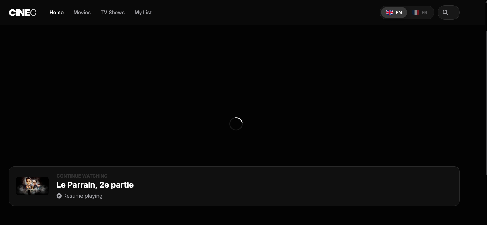
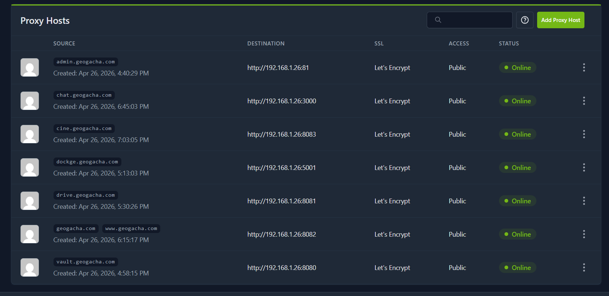
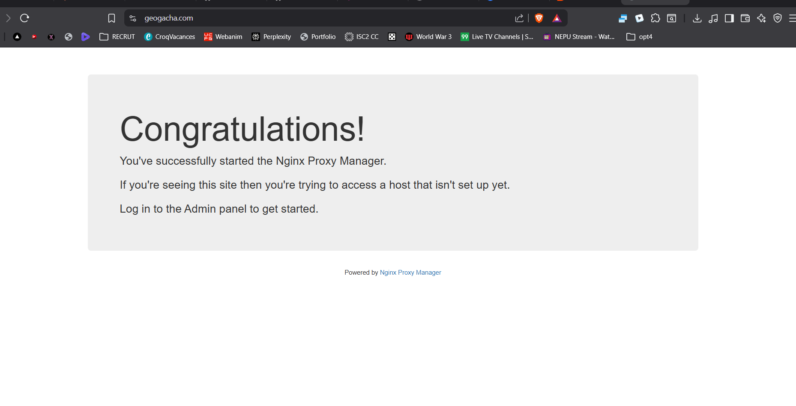
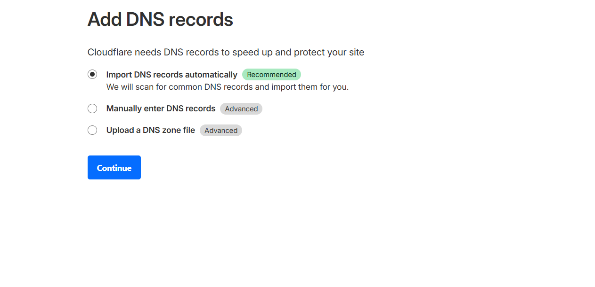

Le Concept :The Concept: L'auto-hébergement (Homelab) est le meilleur terrain d'entraînement. L'objectif est de concevoir et maintenir une infrastructure tournant 24h/24 avec des exigences strictes de disponibilité. Voici le portail central (Homer) regroupant l'ensemble de mes services : Self-hosting (Homelab) is the best training ground. The goal is to design and maintain a 24/7 infrastructure with strict availability requirements. Here is the central portal (Homer) gathering all my services:

J'ai mis en place un monitoring complet pour suivre l'état du matériel (CPU, RAM, Disques) via des dashboards dédiés, couplé à une administration en direct via terminal : I set up comprehensive monitoring to track hardware status (CPU, RAM, Disks) via dedicated dashboards, coupled with live terminal administration:


L'ensemble des services est conteneurisé. La gestion des stacks s'effectue de manière centralisée, permettant d'héberger en local des applications gourmandes comme des modèles d'IA (Ollama) : All services are containerized. Stack management is centralized, allowing local hosting of demanding applications like AI models (Ollama):



J'utilise Nginx Proxy Manager pour gérer le routage web. Le trafic est redirigé vers les bons conteneurs et chiffré via des certificats SSL Let's Encrypt : I use Nginx Proxy Manager to handle web routing. Traffic is redirected to the right containers and encrypted via Let's Encrypt SSL certificates:


Pour ne jamais exposer l'adresse IP publique de mon serveur, j'utilise les tunnels Cloudflare (cloudflared) pour relier mon infrastructure locale au web de manière invisible :
To never expose my server's public IP, I use Cloudflare tunnels (cloudflared) to connect my local infrastructure to the web invisibly:
